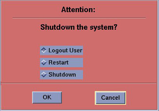
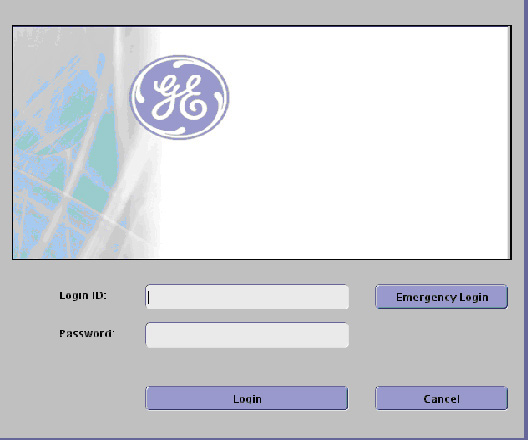
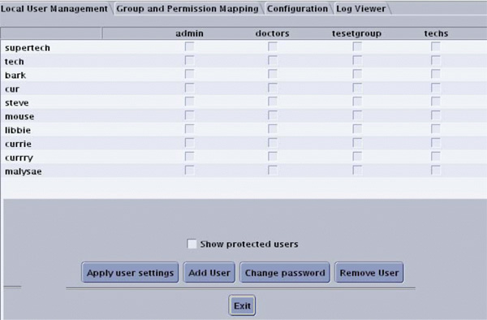
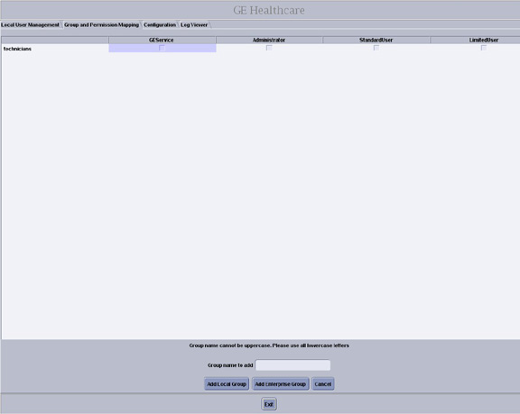
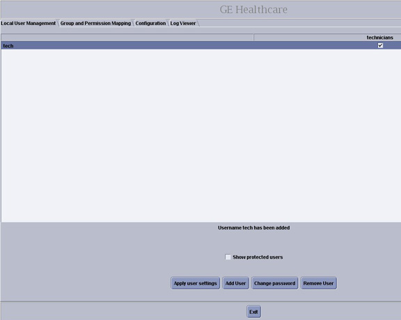
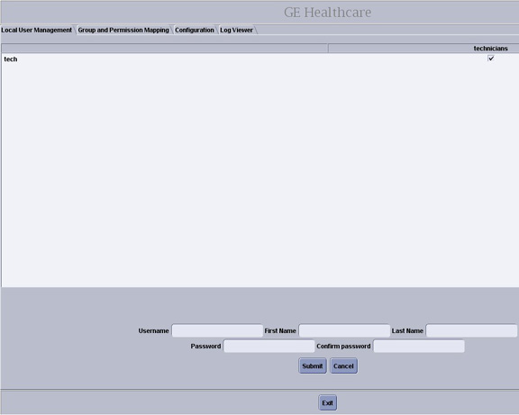
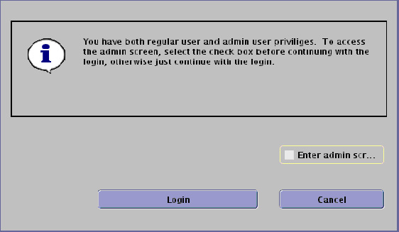
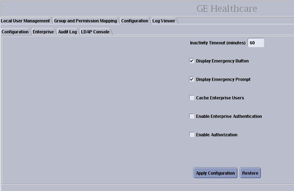
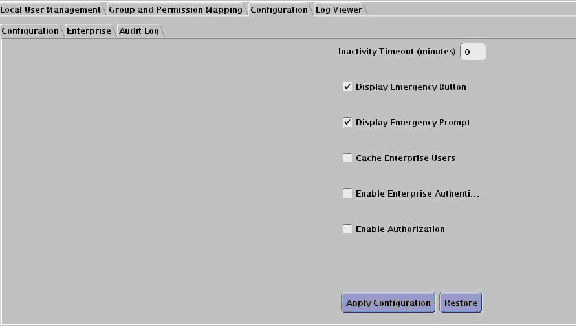
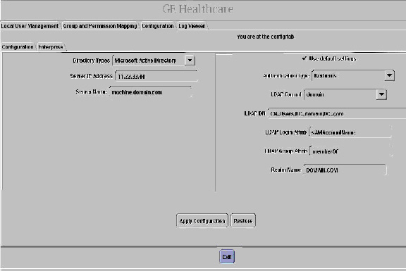

Operating Documentation
Direction 5114043-800, Rev# 9
LightSpeed 3.X Service Methods (Advanced)
Operating Documentation |
| Last Revised: | 22 September 2008 |
| The HIPAA has been disabled when the software was loaded on
this system. Do not turn it on without the consent of your customer.
Perform the following steps ONLY IF the customer has specifically
requested for it to be enabled. Consult the Pre-installation questionnaire that the customer has filled out to perform this procedure | |
When HIPPA is configured, the Shutdown icon popup will contain the Logout User selection.

The list of users who will have access to the system must be added before that person can gain access to the system. Configuration of these users may be added by any user that has admin permission. The service or admin users are both able to add users. The admin users will typically be assigned by the customer administration and will add accounts for the system.
In order to add users, you will need to access the admin screen with Applications software up. To do this:
If HIPAA Present was set to Off during the Load process: Select the Common Service Desktop, Utilities, Application Shutdown. Open a Unix Shell and become root. Type reconfig. Select [Config] . Select the [Preferences] tab. Set HIPAA Present to On. Select [Accept] . Select [Yes] for reboot. If needed, open a Unix Shell and type st. Then select [OK] as needed.
If HIPAA Present was set to On during the Load process: With Application software up, press the pink [Shutdown] icon. Select [Logout User] and then [OK] .
The login/admin screen appears. See the illustration below.

Enter the Login ID: root.
Enter the password:
| NOTE: | If the Password has not been modified by the site and is not known, the contact Local GE Service. |
Select [Login] . The following screen will appear (but may not contain any Users):

Using the Pre-Installation HIPAA worksheet, determine how the customer wants to assign users.
For Local User Management continue with the next section.
| NOTE: | Local User Management maintains User log on account information on the system, whereas Enterprise Setup utilizes the customer's User database maintained on a separate customer server. |
For Enterprise Users skip to the Enterprise Setup section.
| NOTE: | If the site configures as Enterprise, they still need to add at least one group that has Standard User permission and one user assigned to this group to be able to do Protocol Edit. If you do not do this step when in Enterprise mode, no one will be able to add or edit protocols if configured as Enterprise. |
| Perform either the Local User Management Section (this section) OR the Enterprise Setup Section (Section 4). Do NOT perform both. | |
| NOTE: | It is very important to create several different user groups. The reason is that each group will have different access permissions, which are important for securing patient privacy. Groups are assigned access permissions, not Users. |
Select Group and Permission Mapping tab. Create “Users” groups as follows:
Select [Add Group] .
Decide on and enter the [Group name to add] of the group(s) to be added.
Select [Add Local Group] .
Click on the applicable boxes to enable the group permission privileges per the Note below.
| NOTE: | It is recommended to create at least three (3) groups:
|

Select [Apply group settings] .
Click [Apply now] .
Repeat the above steps as necessary for additional groups.
Verify the Group permissions check boxes are set as expected.
Select Local User Management tab. Create “Users” as follows:
Select [Add User] .

Decide on and enter the Username to be added.

Type in the Password and then Confirm password. First Name and Last Name are not required entry fields.
Select [Submit] .
Repeat the above steps as necessary for each additional Username.
Assign each Username to the appropriate group(s) by selecting the check boxes under each group permission heading as needed.
Click [Apply user settings] .
Click [Apply now] .
Click [Exit] .
The HIPAA screen is displayed. Enter one of the usernames created in the Login ID field then enter the associatedPassword.
| NOTE: | Once a user has been added to the list as an administrator,
they have privileges to:
|
Ensure that you are logged in (as described in Section 1) and click the box next to Enter admin screen.

Click [Login] .
Click the Configurations tab.
If not displayed, select Configuration tab on second row.
This brings up the Configuration Screen. (You may see either of two screens depending on software version.)


Select the choices you wish to have selected:
Inactivity Timeout (minutes) - Enter the number of minutes before automatic logout will occur next to the Inactivity Timeout prompt.
For example if you enter 10 minutes, the system will display the splash screen after 10 minutes of inactivity (no keyboard entry or mouse movements), requiring the user to log in. When logging back in, the system is returned to its last known state.
By entering 0, the system will never logout automatically.
Display Emergency Button - Click the box next to the Display Emergency Button prompt. The Emergency Login button will be displayed on the splash screen.
If this button is not displayed, only those users with a valid account can log onto the system.
Display Emergency Prompt - Click the box next to the Display Emergency Prompt to require emergency users to enter their name.
If you do not turn on the Emergency button, this prompt is never displayed.
Cache Enterprise Users - Gives all users previously set up on the system the ability to log in, even if the site network is down.
Enable Enterprise Authentication and Enable Authorization - Used to verify who you are and what privileges you have, based on the network settings at your site.
Click [Apply Configuration] .
Click [Apply now] .
| Perform either the User Management section (Section 2) OR the Enterprise setup (this section). Do NOT perform both. | |
The Enterprise setup is used by the site’s IT (Information Technology) or GE Service personnel. It provides connectivity to the site’s user database.
| NOTE: | If the site does not have a username password server this setup cannot be used. |
Things to consider:
Utilize the enterprise capability whenever possible.
Make sure the enterprise groups are granular enough to restrict protocol edit access.
The inactivity timeout should be turned ON.
At the Login window, enter your Login ID.
Enter your Password.
Click the box next to Enter admin screen.
Click [Login] .
Click the Configuration tab.
If not displayed, select Configuration tab on second row.
This brings up the Configuration Screen. (You may see either of two screens depending on software version.)
Select Enable Enterprise Authentication.
Click the Enterprise tab.
This displays the Enterprise screen.

Enter the required Parameters.
The Network Administrator can help with these.
Click [Apply Configuration] .
Click [Apply now] .
Click [Exit] .